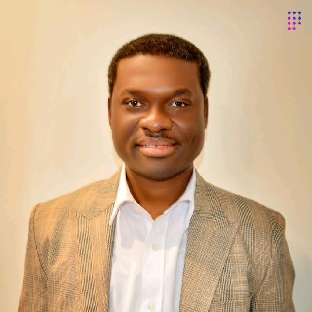

I build the tools that turn financial and investment data into clear, confident decisions, across FP&A, portfolio analytics and financial reporting, increasingly powered by AI.

I'm a CFA charterholder and CPA with more than 13 years across FP&A, financial reporting and institutional investment management, in insurance, banking and SaaS.
For over six years at Serenia Life Financial, I've worked on investment management, performance reporting, financial reporting and climate disclosure for a portfolio of insurance-backed assets. Before that, I handled FP&A and financial reporting at General Electric Canada, and began my career at First Bank in FP&A, performance reporting and product management.
Across every role, the thread is the same: I build tools that make reporting faster and help leaders decide with confidence.
From banking to industrial SaaS to life insurance, always at the point where data becomes a decision.
FP&A, investment management and investment reporting for a life insurer, along with financial reporting and sustainability and climate disclosure.
6+ yearsFP&A and financial reporting for SaaS and manufacturing businesses.
1+ yearFP&A, financial and performance reporting, and product management across banking and SaaS-related businesses.
6+ yearsProjects use synthetic or fictional company data built for portfolio demonstration. Click any card to view it full size.
Every project follows the same discipline: trust the data, explain the variance, look forward, then recommend.
Python pipelines clean and reconcile the data, with documented KPI definitions and automated checks that must pass.
Variance trees, bridges and heatmaps split every gap into volume, yield, mix, timing and one-offs.
Prophet, moving-average and driver models test base, best and worst cases, backtested against holdout periods.
Dashboards and AI agents end with a clear call: increase, maintain, monitor or reduce, with controls that flag uncertainty.
Open to conversations on finance leadership, investment analytics, AI in finance and board roles.
Connect on LinkedIn